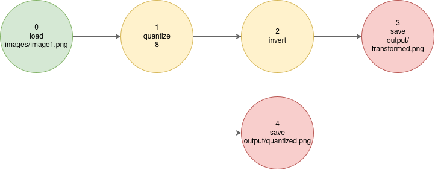
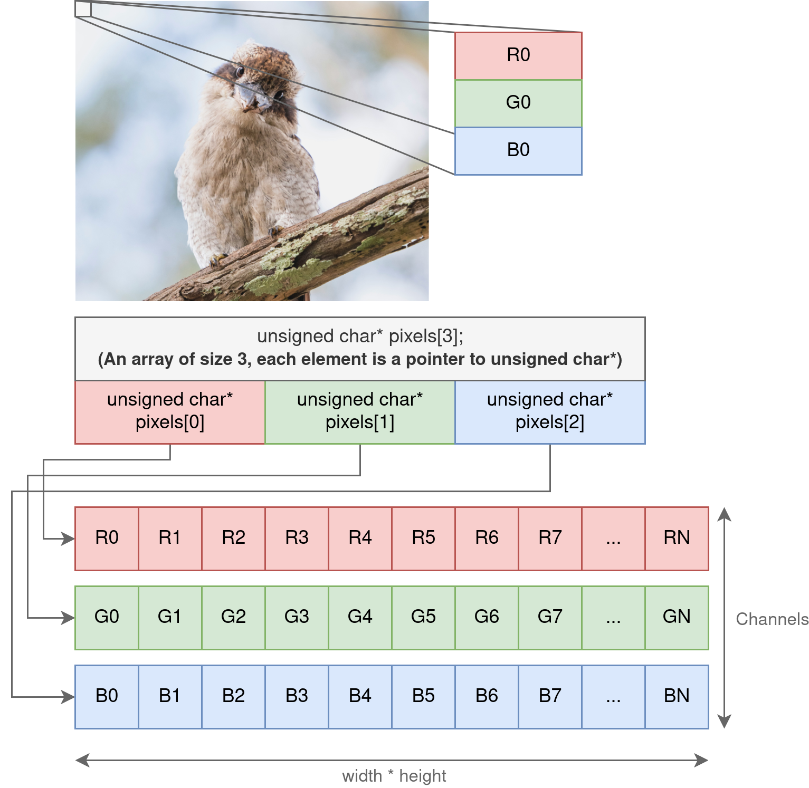

Lab 2: Performance Aware C Computing¶
Objectives¶
You are tasked with implementing an efficient image processing pipeline using the C programming language. The goal is to apply a series of transformation to an input image like so:
We represent this pipeline using a simple text format:
0 -1 load images/image1.png
1 0 quantize 8
2 1 invert
3 2 save output/transformed.png
4 1 save output/quantized.png

The line 1 0 quantize 8 declares the node 1, whose parent is the node 0, and performs a quantization transformation with 8 levels.
Note
This structure is a Directed Acyclic Graph (DAG), a type of graph often used in data processing and scheduling.
Provided Files¶
The parsing and pipeline execution logic have already been implemented so you can focus on managing memory and kernel implementations. The starter codebase contains the following directories and files:
| Path | Description |
|---|---|
images/ |
Image resources for the lab. |
pipelines/ |
Sample transformation pipelines to test your implementation. |
src/ |
C source code for this lab. Contains the files listed below: |
src/main.c |
Parses the transformation graph and executes it. |
src/parser.(c | h) |
DAG representation for the image processing pipeline. |
src/image.(c | h) |
Image structure and utilities for memory allocation and management. |
src/stb_image.h |
Public domain header-only image I/O library (from GitHub). |
src/transformation.(c | h) |
Implementation of image processing kernels. Most functions are missing and must be implemented by you. |
1 - Setting up compilation¶
Before starting to code, we will set up a Makefile to make compilation easier. We need to:
- Compile
main.c,image.c,parser.candtransformation.cusinggcc - Produce a binary named
mytransformat the root of the project - Expose a
cleantarget that removes compiled artifacts- This includes any
.o,.so,.out, as well as themytransformbinary
- This includes any
- You should link to the math standard library by using the
-lmcompilation flag
Danger
The output binary must be named mytransform, or later parts of the lab may not work correctly.
a) Create a Makefile at the root of the project¶
Create Makefile with the following content:
Then, run the make command to test this starter makefile:
Tip
Note that you should use tabs instead of spaces before the gcc $^ ... line, or make will complain.
b) Create variables for the compiler and compilation flags¶
Add two new variables, CC and CFLAGS at the top of the Makefile so we can customize the compilation process:
mytransform: src/main.c src/image.c src/parser.c src/transformation.c
$(CC) $(CFLAGS) $^ -o $@ -lm
To start, you should use -g -O0 --Wall as compilation flags.
Note that you may need to rm ./mytransform to test your makefile
c) Make the compilation process incremental¶
If we modify the src/image.c file, we currently have to recompile the entire application !
We would like to compile src/image.c to the src/image.o object file, this way we can incrementally rebuild the binary when a file changes:
mytransform: src/main.c src/image.o src/parser.c src/transformation.c
$(CC) $(CFLAGS) $^ -o $@ -lm
src/image.o: src/image.c src/image.h
$(CC) $(CFLAGS) -c $< -o $@
Update your Makefile so that the mytransform binary is built incrementally from all .c files.
If you did it correctly, you should get something like this:
$ make
gcc -g -O0 --Wall -c src/image.c -o src/image.o
gcc -g -O0 --Wall -c src/parser.c -o src/parser.o
gcc -g -O0 --Wall -c src/transformation.c -o src/transformation.o
gcc -g -O0 --Wall -c src/main.c -o src/main.o
gcc -g -O0 --Wall -o mytransform src/image.o src/parser.o src/transformation.o src/main.o -lm
d) Add a clean and re target¶
We would like to be able to run make clean to remove all the object files. Because the clean rules does not produce a file, we must declare it as phony:
Implement the clean rule in your makefile so that you can effectively remove all compilation artifacts.
We want to implement a rule to REbuild the entire application from scratch. make re should first run the clean rule, and then rebuild mytransform. Make sure to mark re as phony.
e) When you are done, compare your makefile with the following proposal:¶
Makefile proposal
# We create variables to define the C Compiler and the compilation flags (options)
CC := gcc
CFLAGS := -g -Wall -O0
# By default, `make` executes the first, top-most rule
# We want to build mytransform by default, so we make it the first rule!
# To build mytransform, we first need image.o, parser.o, etc.
mytransform: src/image.o src/parser.o src/transformation.o src/main.o
# - We then call CC (gcc), output to $@ (mytransform)
# - link to the math library (-lm)
# - add all compilation flags (CFLAGS)
# We need to compile all the dependencies ($^)
$(CC) $(CFLAGS) -o $@ $^ -lm
# To obtain src/main.o, we need src/main.c
src/main.o: src/main.c
# We need to add the `-c` flag because we are building a .o file and not the final application!
$(CC) $(CFLAGS) -c $< -o $@
src/image.o: src/image.c src/image.h
$(CC) $(CFLAGS) -c $< -o $@
src/parser.o: src/parser.c src/parser.h
$(CC) $(CFLAGS) -c $< -o $@
src/transformation.o: src/transformation.c src/transformation.h
$(CC) $(CFLAGS) -c $< -o $@
# We define an helper rule to clean the build artifacts
clean:
rm -f mytransform
rm -f src/*.o
# We add an helper "re" rule to RE-build everything (clean and rebuild)
re: clean mytransform
# We make `clean` and `re` phony rules because they don't produce files
# (Otherwise, `make` will except files named "clean" and "re" to be produced)
.PHONY: clean re
We can now run the application:
create_image - Not implemented yet
Could not allocate image for load
convert_to_grayscale - Not implemented yet
invert_image - Not implemented yet
quantize_image_naive - Not implemented yet
Node 4 requested to save an image from node 3, which did not produce an image
This indicates that your build works correctly and you can continue the lab.
2 - Allocating & Manipulating memory¶
An image is made up of pixels. Every pixel is made up of one or more channels. Classically three channels are used: Red, Green, and Blue (RGB). Each channel can have a value in the range \([0, 255]\). This means that each value can be stored inside an unsigned char which is exactly one byte (8 bits) as \(2^8 = 256\).
The BMP format stores each pixel in the interleaved format: pixels are stored contiguously like so: \(R_0G_0B_0R_1G_1B_1R_2G_2B_2 \dots R_nG_nB_n\). For this lab, we will instead use the planar storage format:

We use one array per channel.
0. Understanding the Image data structure¶
Before implementing the image processing pipeline, it is important you understand how images are stored in memory, and how we can manipulate them.
a) Look at image.c and image.h, and try to understand the provided structure.¶
- Pixels are stored as
unsigned char* pixels[3]:- How many arrays do we have to allocate to store an RGB Image?
- What's the size of each array?
- What happens if we have a grayscale image (black & white).
- How do we distinguish between grayscale and RGB images?
1. Implement Memory Allocation¶
a) Implement image allocation¶
You must implement the function image.c:create_image(...).
This function should allocate memory buffers big enough to hold an image of size \(\text{width} \cdot \text{height}\). Note for this lab, channels can either be 1 (grayscale) or 3 (RGB).
b) Implement image deallocation¶
You must implement image.c:free_image(...).
Make sure you can free both grayscale and RGB images. Note: you must also free the Image structure itself.
c) Execute the memory implementation test¶
Compile your program and fix any errors until none are left. Run the following:
You should get the following:
2. Image Copying¶
a) Implement image copy¶
You must implement Image* copy_image(const Image* image) inside src/image.c
This function receives an Image*, and produces a deepcopy, meaning that we are not copying the pointers, but allocating new pixels buffers and duplicating the image in memory.
You should not use memcpy or strcpy for this exercise: perform a manual copy.
b) Execute the memory implementation test¶
Compile again and run:
You should get the following (Exact results may vary depending on your machine):
Memory Allocations tests completed in 5 seconds
Copy Test: 3000x3000x3 image -> 3524.74 Melem/s, 3.52 GB/s
c) Implement 2d copy loops¶
When copying, we have to deal with three dimensions: the channels, the width and the height.
In which order does your current implementation traverse the pixel buffer ?
Implement the following loop structure in C:
Tip
You should make a copy of your current implementation before implementing this structure, so you can compare the different versions.
Optionally, make multiple versions of copy_image with different names (e.g. copy_image_cxy, copy_image_xyc), and have copy_image call the version you want to test.
Now, try swapping out the loop. First iterate on y, then x, thenc. Try all possible combinations to find which one is faster. Can you explain why ?
d) Implement the linear versions¶
While images are 3D structures (When taking the channels into account), you may have noticed that we have stored them as 2D arrays (One linear array per channel). Each channel is stored in row-major order.
- Implement two nested loops: the upper levels iterating on the channels, the inner loop iterating over each pixel.
- Implement one loop: iterate only over the pixel, copying RGB in a single loop.
Compare the performance by running the --memory-check option. Which loops gives you the best performance ? Do you understand why ?
3 - Executing a transformation pipeline¶
Look at src/parser.h and try to understand the different structures of the parser. Do the same for src/transformation.c
1. Implementing Grayscale¶
The grayscale transform receives an RGB image and converts it into a black-and-white, single channel image. The formula for the transformation is:
Where C is the grayscale channel, and R,G,B are the corresponding components of the RGB image. Note: If the grayscale transform receives a grayscale image as input, it should output a (deep) copy of the input.
a) Implement this transformation in src/transformation.c:convert_to_grayscale(...)¶
You should read data from node.input, and allocate and write data to node.output.
You do not need to free the input and output buffer of any of the nodes: it will be handled for you.
Test using
At this stage, output/test_grayscale.png should contain the grayscale of images/test.png
2. Implementing Inversion¶
The inversion transform is simple:
Where C is one of the input image channels (RGB or Grayscale). Implement this kernel in transformation.c:invert_image(...).
Test using
3. Implementing Quantization¶
We will implement a uniform quantization transform, which uniformly reduces the number of possible values in each component of the image.
Where \(\text{levels}\) is the target number of discrete values per component. This maps each input color channel value \(C_{in} \in [0, 255]\) to a quantized output \(C_{out}\) in the same range.
a) Implement this transformation using the formula provided above.¶
You must implement this function in transformation.c:quantize_image_naive(...)
Test using
b) Optimize using a lookup table¶
Division and floating-point operations can be costly. Since \(C_{in} \in [0, 255]\), we can easily precompute all possible outputs in a lookup table (LUT) of size 256, then convert each pixel using:
We are trading memory overhead for performance, which is a very common pattern.
Implement this function in transformation.c:quantize_image_lut(...), and be sure to correctly allocate and free the LUT.
c) Compare performance¶
Modify transformation.c:quantize_image(...) to either use the LUT or the naive version, and run the following code:
Which version is faster ? What's the speedup of the LUT algorithm over the naive version ?
4) Validation¶
At this stage, your code should be able to execute all pipelines in the pipelines/ directory.
Validate your implementation by checking that output images are generated and appear visually correct.
1. Improving performance¶
Once your implementation is functionally correct, your next goal is to optimize performance.
Use the provided script:
Tip
You should run the previous script with both the LUT and naive implementation of quantization to compare.
Check the resulting plots in ./results/first_version/. Take a look at ./results/first_version/pipeline.pipeline to understand which operations are being evaluated.
Re-run the benchmark after every meaningful optimization, and check ./results/comparisons.png to see if you improved performance or not. Tip: play around with compilation flags.
To remove a version, remove the corresponding folder in ./results
Important
You need to have python installed for run_all.sh to work. On Fedora:
5 - Summary¶
Upon completing this second lab, you should be able to:
- Create a makefile, link to a dynamic library.
- Explore compilation flags for performance
- Allocate and free memory in C.
- Explore the effect of memory layout and loop order on performance.
- Implement loop-based algorithms.
- Rearrange your algorithm to avoid costly operations.
- Understand the basics of the optimization loop.